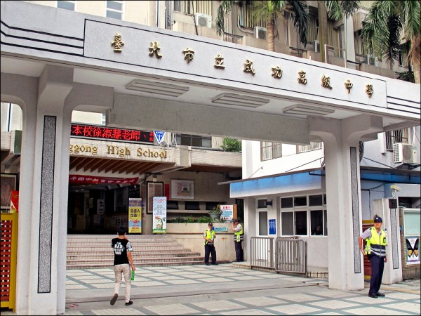
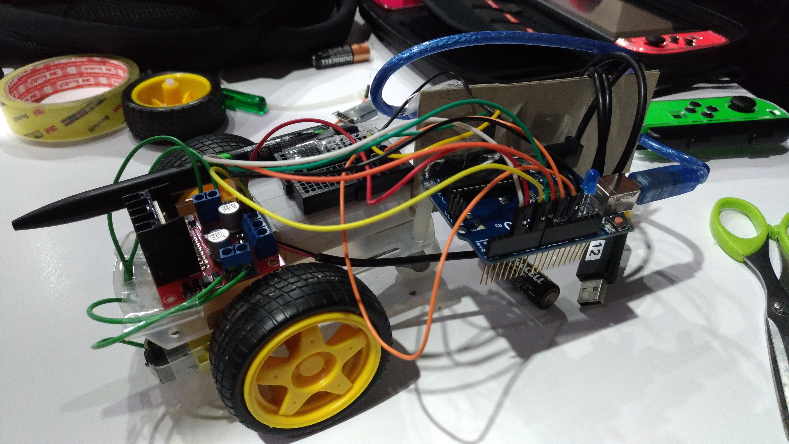
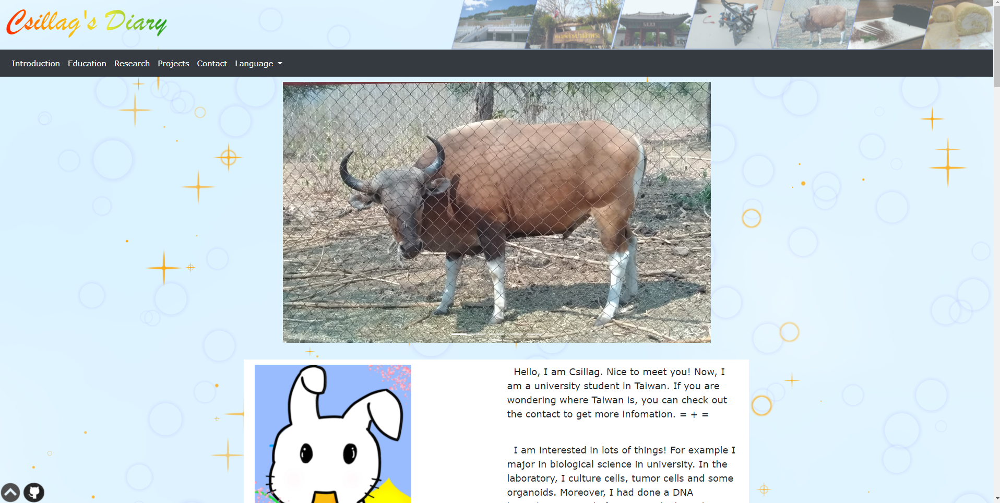

Hello, I am Csillag. Nice to meet you! Now, I am a university student in Taiwan. If you are wondering where Taiwan is, you can check out the contact to get more infomation. = + =
I am interested in lots of things! For example I major in biological science in university. In the laboratory, I culture cells, tumor cells and some organoids. Moreover, I had done a DNA barcoding project before. Doing biological experiment is really fun.
Besides, electrical stuffs and computer technology also interest me too. I spend a great deal of time to doing some cool projects such as robots and programs. In this website, I will introduce some projects that I had done before. Welcome to share your ideas with me.
Although I am not good at programming or these kinds of work. But those knowledge make me curious and I will try my best to learn more and more. Now, It's about time to end the article. Have fun!
Taipei Municipal Chenggong High School was formerly the Taipei (Pronounced Tai-bay) Prefectural Second Middle School, established in 1922 and briefly called Taipei Second Middle School. It moved from the Bodhidharma temple to the present site in 1925, and was intended for the enrollment of Taiwanese students. In 1946, the following year of our victory over Japan in the Sino-Japanese war and restoration of Taiwan to the Republic of China, the school was renamed the Taiwan Provincial Taipei ChengGong High School in memory of Tseng Cheng-gong` s exploitation of Taiwan and resistance to foreign invaders. By order of the government, the school began to have evening session in 1953, which stopped enrolling new students in 1981. The evening session terminated two years later along with the graduation of the students.

REF://www2.cksh.tp.edu.tw/english/
Kasetsart University (KU) (Thai: มหาวิทยาลัยเกษตรศาสตร์) is a public research university in Bangkok, Thailand. It was Thailand's first agricultural university and Thailand's third oldest university.[citation needed] It was established on 2 February 1943 to promote subjects related to agricultural science. Since then, Kasetsart University has expanded its subject areas to cover life sciences, science, engineering, social sciences, and humanities. Kasetsart University's main campus is in Bangkhen, northern Bangkok, with several other campuses throughout Thailand. It is one of the largest university in Thailand.
REF:https://en.wikipedia.org/wiki/Kasetsart_University
National Chiao Tung University (NCTU; Chinese: 國立交通大學) is a public research university located in Hsinchu, Taiwan. Established in 1896 as Nanyang Public School by an imperial edict of the Guangxu Emperor, it is one of Taiwan's leading universities. After the Chinese Civil War, NCTU was re-established by former Chiao Tung University faculty and alumni in 1958.
NCTU was selected by Taiwan's Ministry of Educations as one of the seven national universities focused on research in 2002. It was subsequently chosen to pursue all-around excellence with "versatile international competitiveness to continuously strengthen international academic influence and visibility".

REF:https://en.wikipedia.org/wiki/National_Chiao_Tung_University

Organoids
An organoid is a miniaturized and simplified version of an organ produced in vitro in three dimensions that shows realistic micro-anatomy. I used to culture them once a week. In the lab, we use tumor cells to build the organoid models. Those cells will be useful to provide the environment for advanced research.

DNA Barcoding
DNA barcoding is a method which try to analyze species of animals which also able to analyze the relationship between different individual. By this experiment, we can find out the relation between those samples.
Four legged robot
This robot is based on Lego Mindstorms NXT Robotics. He can walk with his four legs. In this project, we design his mechanical mechanism. Make he walks stable, safety, of course, as soon as possibe.
DNA barcoding of vulture
DNA barcoding is a method to analyze species of animals which also able to analyze the relation between indiviual. By this experiment, we try to find out the relateion between the vulture samples from different regions.

Pie Face Game
This project is my final project in applied electricity class. In this Pie Face game, two players rotate their joystick. Someone who rotates his joystick slower may ... have the pie!

Clock
This project is builded with 8052, a MCU. It shows the time right now by four 7-segment displays. Besides, there are a few functions in the clock. Such as 7 LEDs which indicate the day today. A blue red common anode LED indicate a.m. or p.m.. A touch switch and a joystick can adjust the time easily.

Power supply & Speaker
This project is composed of a power supply and a speaker. The power supply can supply the voltage from 5V to 12V. In order to get constant voltage, I add some ICs in the circuit to stable the voltage. The speaker allow visible light communication. We can use it to play music!

Bluetooth Car
This project is a remote control car by using arduino. The car should be control by the mobile app. I can send a bluetooth message by app to control the movement of the car.

Website
This project is a website, which you see now. By building this website, I learn how to write the "real" CSS, HTML and JS codes. Actually, it is not easy to write them well. But I will do my best XD.

EEG & EMG -Based mobile robot control
This project is about the EEG and EMG. We hope to use the EEG to control the movement of the robot. We use Labview to design our code. However, our sensor is not able to detect the EEG signal stable. We decide to add the EMG to improve our system's stability. Finally, we can execute command which we want in simulation. And we also add several functions on it. Such as record, set the shortest path and so on to increase the efficiency.

Real time counting IoT system
This project is a IoT system. It is designed to count the population. There is a ultrasound sensor which can be set up on the door. Thus, we can detect if someone walks in or walks out. The sensor is connect with ESP8266 which link to the IoT system. We can observe the data on the internet. Which shows the location and counter in graph real time.

KNR robot design
This project is in Intelligent Robotics class. We can set up many sensor on it such as the webcam, ultrasound sensor, IR sensor, touch sensor and so on to execute different kinds of mission. In the class, we learn to design the robot to avoid obstacles, and try our best to make it stable and finish the mission as fast as possible.